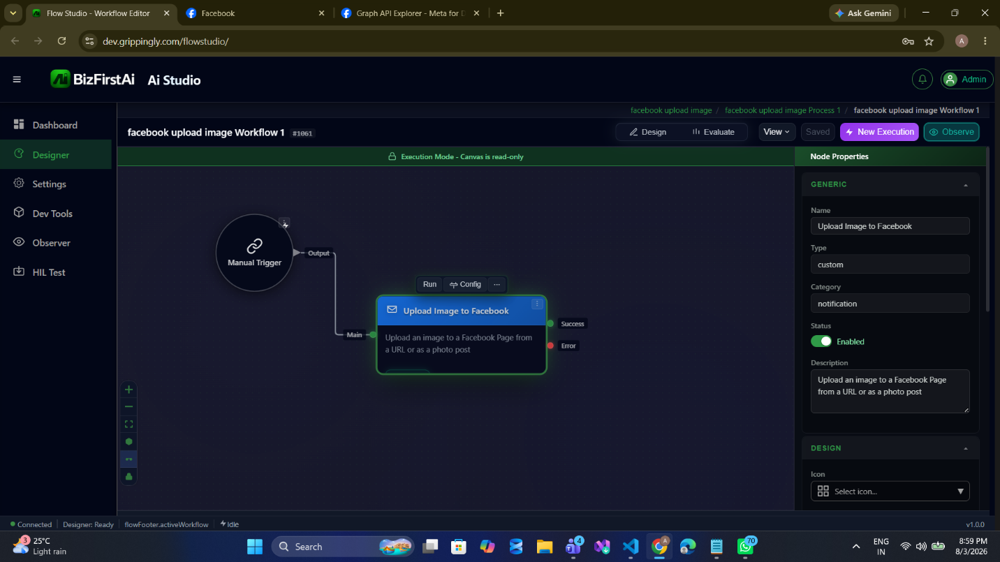
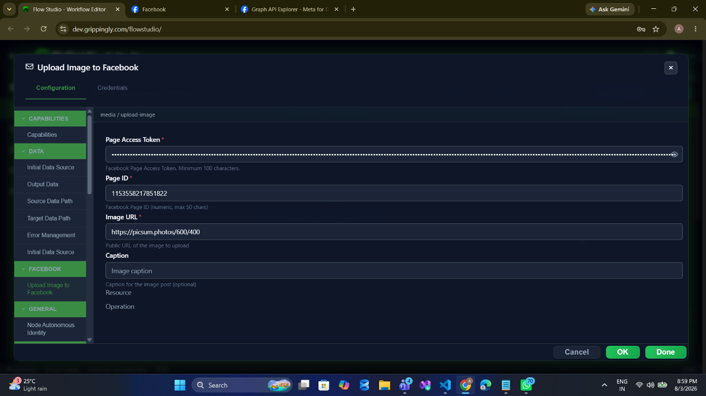
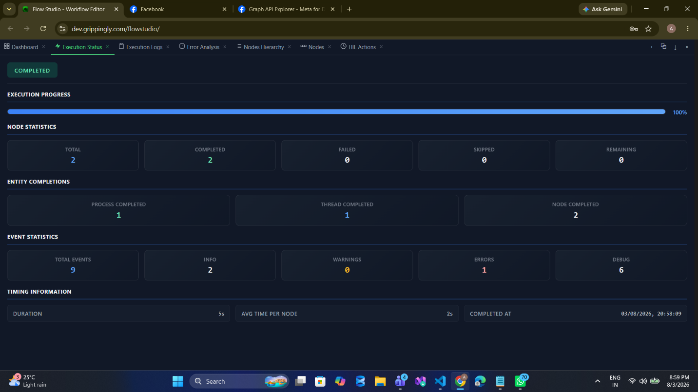
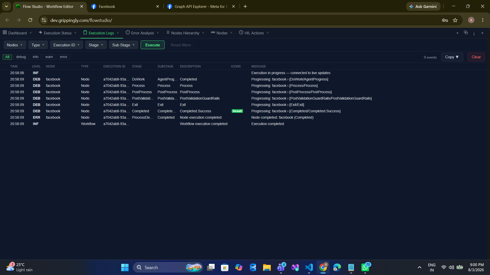
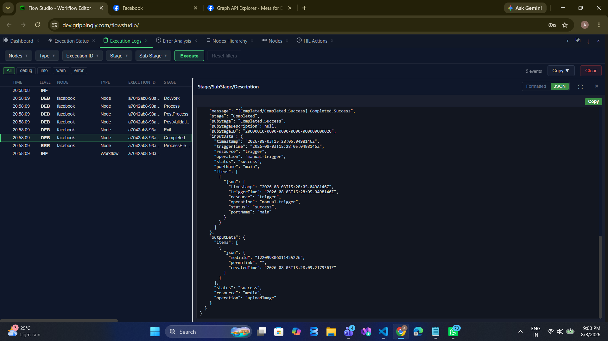
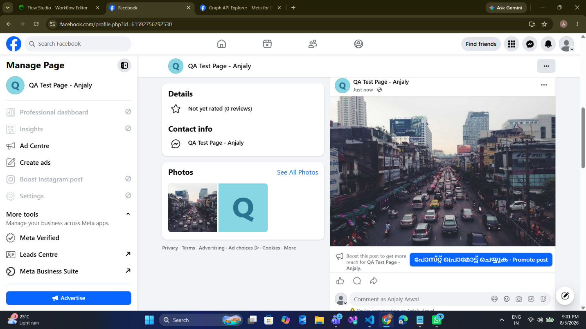

media/uploadImage
Publish a photo to a Facebook Page from a publicly reachable image URL. Publishes immediately — there is no draft step.
Palette name: Upload Image to Facebook · Graph call:
POST /{pageId}/photos · Permissions: pages_manage_posts · Field reference: Media Operations
URL-based only, and it publishes immediately. The node cannot upload binary content or a workflow attachment — Facebook's own servers fetch the URL you give it, so the image must be reachable from the public internet. There is no draft step: a successful call puts the photo on the Page.
When to Use
- Publish a photo post where the image is the content, rather than attaching a picture to a text post.
- Push generated visuals — a chart, a certificate, a rendered report — that a preceding step uploaded to public storage.
- Product or listing images pulled from a catalogue CDN on a schedule.
- Event photos mirrored from another system as they are approved.
Walkthrough
1Place the node

2Configure

media / upload-image. Image URL must be publicly reachable — a localhost or VPN-only address will fail, because Facebook fetches it, not the workflow engine.3Run


4Read the output

mediaId identifies the new photo. permalink is empty — the field exists in the contract but the node never populates it. Build the URL from the ID, or read it back with a separate Graph call, if you need a link.5Verify on the Page

Configuration
| Field | Required | Description |
|---|---|---|
resource | Required | Must be media. |
operation | Required | Must be uploadImage. |
pageAccessToken | Required | Page access token, or a stored credential. |
pageId | Required | Numeric Page ID, at most 50 characters. |
imageUrl | Required | Publicly reachable absolute URL of the image. |
caption | Optional | Caption for the photo post. Maximum 1,024 characters. |
Sample Configuration
{
"resource": "media",
"operation": "uploadImage",
"credentialID": 4021,
"pageId": "1153558217851822",
"imageUrl": "https://picsum.photos/600/400",
"caption": "Image caption"
}Publishing a generated chart whose URL an earlier node produced:
{
"resource": "media",
"operation": "uploadImage",
"credentialID": 4021,
"pageId": "{{ $env.FB_PAGE_ID }}",
"imageUrl": "{{ $output.uploadToS3.items[0].publicUrl }}",
"caption": "Weekly performance summary"
}Output
| Field | Type | Description |
|---|---|---|
status | string | "success" |
items[0].mediaId | string | New photo object ID. |
items[0].permalink | string | Always empty. Reserved in the contract; not produced by the node. |
items[0].createdTime | string | ISO-8601 timestamp generated by the node on success. |
{
"status": "success",
"resource": "media",
"operation": "uploadImage",
"items": [
{
"mediaId": "132099306831625226",
"permalink": "",
"createdTime": "2026-08-03T15:20:05.2179393Z"
}
]
}Validation
| Message | Cause |
|---|---|
Invalid access token | Token blank or shorter than 100 characters. |
Invalid page ID | pageId blank or longer than 50 characters. |
Invalid image URL | imageUrl is blank or not a well-formed absolute URI. This is a format check only — reachability is not tested until Facebook tries to fetch it. |
Caption exceeds maximum length of 1024 | Caption too long. |
Notes and Cautions
- A well-formed URL is not a reachable URL. Local validation only checks the shape. If Facebook cannot fetch the image, the failure comes back as a Graph error on the error port — check that the host is public, serves the file without authentication, and presents a valid TLS certificate.
- Not idempotent. Two runs publish two photos.
- This publishes to the feed, not to a hidden album. To attach an image to a text post instead, use the
picturefield on page/post. - No binary upload path exists. If the file is not already on a public host, stage it there first — for example with an S3 node — and pass the resulting URL.
Related
- media/uploadVideo — the video equivalent, which is asynchronous
- page/post — attach an image to a text post instead
- Rate Limits — timeouts and retry behaviour on writes